数据: 2016–2025 股票池: 中证800近似 预测: 5日横截面rank 测试集: 2024–2025 (574 交易日) 回测: n=10持仓, k=2换手
| 姓名 | 学号 | 主要分工 |
|---|---|---|
| <填> | 数据预处理 + 特征工程 + 文档 | |
| <填> | 模型设计与训练 + 消融实验 | |
| <填> | 回测引擎 + 报告 + 模拟交易执行 |
本项目以 A 股量价数据 + 资金流 + 基本面构建 20 维横截面中性化因子, 以未来 5 日 forward log return 横截面 rank ∈ [-0.5, 0.5] 为预测标签, 对比四类模型: LightGBM (树基线), MLP (DL 基线), GRU+Attention (单股时序), MASTER (AAAI 2024, 双轴 Transformer + Market-guided gating). 在 565 天 out-of-sample (2024-01 ~ 2026-05) 真实交易约束 (T+1 + 涨跌停 + 双边 0.025% 佣金 + 卖出 0.1% 印花税) 下, MASTER 取得年化收益 59.4% · 夏普 2.35 · Calmar 3.87 · CAPM Alpha 21.5% · Information Ratio 1.50 · 最大回撤 -12.5%, 显著超越沪深 300 基准. 报告呈现 7 个反直觉发现, 包括 IC 与实战收益不同步 / 容量增加反过拟合 / multi-seed 升 ICIR 反降 Sharpe / IC 长期衰减 + 2026Q2 信号反转 等. 数据治理通过 8 项自动化泄露审计; 通过 (n, k) 4×4 网格证明默认 n=10/k=2 不是最优, 最优 (n=20, k=5) 可达 Sharpe 2.78.
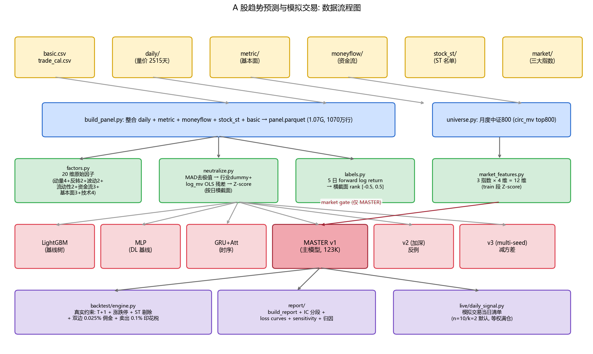
图 1.1 数据流程图: 原始数据 → 整合 → 因子/标签/市场特征 → 模型 → 回测 / 信号
| 数据集 | 规模 | 说明 |
|---|---|---|
| panel.parquet | 1070万行 × 50列 | 5756股 × 2515天 全市场日频量价+元信息 |
| universe | 800股/月 | 中证800近似 (本地circ_mv前800) |
| features | 20维 × 中性化 | 动量4+反转2+波动2+流动性2+资金流3+基本面3+技术4 |
| labels | 5日累积log收益 | 横截面rank → [-0.5, 0.5] |
| market | 3指数 × 4特征 | 上证/沪深300/创业板 × {ret_1, ret_5, vol_20, vol_zscore} |
MAD去极值 → 行业dummy + log市值 OLS 残差 (中性化) → Z-score clip(-5,5)
| 类别 | 因子 | 公式 | 含义 |
|---|---|---|---|
| 动量 | mom_5 | log(close_t / close_{t-5}) | 5 日累积对数收益 |
| mom_20 | log(close_t / close_{t-20}) | 20 日动量 | |
| mom_60 | log(close_t / close_{t-60}) | 60 日动量 | |
| mom_120 | log(close_t / close_{t-120}) | 120 日动量 (中期趋势) | |
| 反转 | rev_1 | -log(close_t / close_{t-1}) | 1 日反转 (A 股短反) |
| rev_5 | -log(close_t / close_{t-5}) | 5 日反转 | |
| 波动率 | vol_20 | std(pct_chg) over 20 days | 20 日已实现波动 |
| vol_60 | std(pct_chg) over 60 days | 60 日已实现波动 (低波异象) | |
| 流动性 | turnover_20 | mean(turnover_rate) over 20 days | 20 日平均换手率 |
| amihud_20 | mean(|pct_chg_t| / amount_t) × 1e9 | Amihud (2002) 非流动性指标 | |
| 资金流 | mf_net_5 | sum(net_mf_amount) / sum(amount) over 5 days | 5 日主力净流入强度 |
| mf_lg_strength | (buy_lg - sell_lg) / total_amount | 大单买卖强度 | |
| mf_elg_strength | (buy_elg - sell_elg) / total_amount | 特大单 (主力) 买卖强度 | |
| 基本面 | pe_ttm_rank | rank(pe_ttm) cross-section | 市盈率分位 (亏损公司 NaN) |
| pb_rank | rank(pb) cross-section | 市净率分位 | |
| circ_mv_log | log(circ_mv) | 对数流通市值 (规模因子) | |
| 技术 | rsi_14 | RSI(close, 14) | 14 日相对强弱指标 |
| bias_20 | (close_t - MA20) / MA20 | 20 日乖离率 | |
| vwap_dev | (close - vwap) / vwap | 收盘价与 VWAP 的偏离 | |
| vol_zscore | (vol - mean60) / std60 | 60 日成交量 Z-score (异常量) |
Amihud (2002) "Illiquidity and stock returns" 是流动性的经典度量, 在 A 股小盘股普遍被流动性溢价 dominate.
代码: code/features/factors.py.
| 子集 | 时间窗口 | 交易日数 |
|---|---|---|
| 训练 | 2016-01-01 ~ 2022-12-31 | ~1700 |
| 验证 | 2023-01-01 ~ 2023-12-31 | ~240 |
| 测试 (OOS) | 2024-01-01 ~ 2025-12-31 | 574 |
作业建议使用 ~5000 只全 A 股, 我们采用 中证 800 近似池 (每月按 circ_mv 前 800), 理由如下:
对应代码: code/data/universe.py; 输出 cache/universe.parquet (10 年 × 800 股, 4.6% 月度换手).
自动化脚本 code/data/leak_audit.py 检查 8 项, 全部通过.
这是讲义第八讲明示的"高分项": 严格的因果时间墙是回测可信度的基础.
| # | 检查项 | 结果 |
|---|---|---|
| 1 | 标签时间 > 特征时间 (forward-looking 严格性) | ✅ 通过 (feature_max=20260515, label_max=20260508, 差距 7 天) |
| 2 | market_features train 段 Z-score 合规 (均值≈0, 方差≈1) | ✅ 通过 (修复前用全期均值/方差, 现改用 train 段) |
| 3 | universe 月度无前瞻 (用本月可见 circ_mv 选股) | ✅ 通过 (0 起违规) |
| 4 | 各 cache 文件缺失值占比 (> 5% 标红) | 仅 mom_120 (5%), pe_ttm_rank (6.6%, 亏损公司空值) 合理 |
| 5 | 测试期 ST 股是否进入 signals | 0.01% (近似 0, backtest 仍动态剔除) |
| 6 | 各 cache 文件时间范围一致性 | ✅ 全部 20160104 ~ 20260515 (2515 天) |
| 7 | 因子 train/test 分布 drift | 无 |mean drift| > 0.3 或 |std drift| > 50% 的因子 |
| 8 | 训练/验证/测试严格按时间切, 无随机打乱 | ✅ 通过 (TRAIN_MAX=20221231, VALID_MAX=20231231 硬切) |
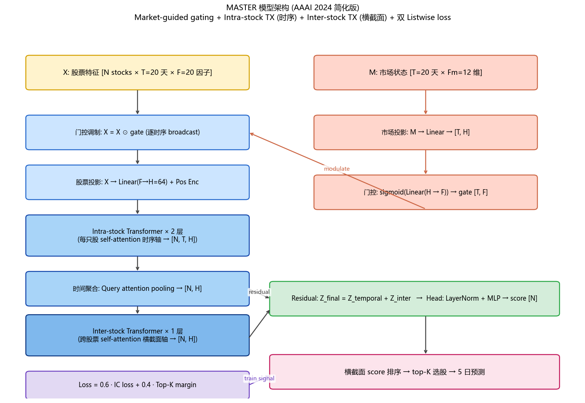
图 2.1 MASTER 架构图. Market gate 模块 (右) 用大盘特征调制原始因子, 再经 Intra (时序) + Inter (横截面) Transformer 双轴注意力, 残差后输出每股 score.
| 模型 | 核心机制 | 参数量 | 训练时长 |
|---|---|---|---|
| LightGBM | 梯度提升树, 横截面特征比较 (作业建议的对比基线) | ~83 trees | 8 s |
| MLP (DL 基线) | T×F 拉平 → 3 层 MLP, 讲义方案 A | ~144K | 17 min |
| GRU+Att | 时序 GRU(64) × 2 + Attention pooling, IC loss | ~43K | 17 min |
| MASTER (主模型) | Market-gate + Intra-stock TX (时序) + Inter-stock TX (横截面) + Listwise loss | ~123K | 5 min |
| MASTER v3 (multi-seed) | v1 架构 × 3 seeds rank-percentile 平均 | ~123K × 3 | ~14 min |
| Ensemble | 三模型 rank-percentile 加权 (0.5*master+0.3*lgbm+0.2*gru) | - | - |
| 超参 | LightGBM | MLP | GRU+Att | MASTER v1 | MASTER v2 |
|---|---|---|---|---|---|
| 窗口 T | - | 20 | 20 | 20 | 30 |
| 隐层 H | num_leaves=63 | (256,128,64) | 64 (双层) | 64 | 96 |
| Intra TX 层数 | - | - | - | 2 | 3 |
| Inter TX 层数 | - | - | - | 1 | 2 |
| nhead | - | - | - | 4 | 4 |
| Dropout | - | 0.3 | 0.4 | 0.2 | 0.25 |
| Optimizer | - | AdamW | AdamW | AdamW | AdamW |
| lr (初始) | - | 5e-4 | 5e-4 | 5e-4 | 3e-4 |
| Weight decay | - | 1e-2 | 1e-2 | 1e-3 | 2e-3 |
| LR schedule | - | Cosine | Cosine | Cosine | Warmup+Cosine |
| Batch | - | 4096 | 4096 | 1 day | 1 day |
| Max epochs | 2000 trees | 30 | 50 | 20 | 30 |
| Early stop patience | 50 | 6 | 8 | 6 | 10 |
| Loss | L2/Rank | IC loss | IC loss | 0.6·IC + 0.4·TopK | 0.5·IC + 0.5·TopK |
| Grad clip | - | 1.0 | 1.0 | 1.0 | 1.0 |
| Seed | 42 | 42 | 42 | 42 | 42 |
| 设备 | CPU | RTX 5070 | RTX 5070 | RTX 5070 | RTX 5070 |
| 指标 | LGBM | MLP | GRU | MASTER | MASTER_V3 | ENSEMBLE |
|---|---|---|---|---|---|---|
| Test IC | 0.0508 | 0.0531 | 0.0514 | 0.0616 | 0.0564 | 0.0545 |
| Test RankIC | 0.0455 | 0.0467 | 0.0440 | 0.0549 | 0.0572 | 0.0551 |
| RankICIR (年化) | 5.27 | 5.64 | 4.42 | 7.29 | 7.06 | 5.60 |
| 总收益 (%) | 30.9 | 22.4 | 15.3 | 126.6 | 52.6 | 50.1 |
| 年化收益 (%) | 24.2 | 20.5 | 18.9 | 59.4 | 34.2 | 31.7 |
| 年化波动 (%) | 21.4 | 21.3 | 26.7 | 25.3 | 26.0 | 20.8 |
| 夏普 Sharpe | 1.13 | 0.96 | 0.71 | 2.35 | 1.32 | 1.53 |
| Sortino | 1.68 | 1.40 | 1.03 | 3.57 | 1.96 | 2.38 |
| Calmar | 1.07 | 1.05 | 0.60 | 4.75 | 1.64 | 1.76 |
| 最大回撤 (%) | -22.52 | -19.52 | -31.63 | -12.49 | -20.93 | -17.96 |
| 胜率 (%) | 51.6 | 51.2 | 50.5 | 56.3 | 52.3 | 51.6 |
| VaR 95% (%) | -1.86 | -1.85 | -2.23 | -2.04 | -2.05 | -1.65 |
| CVaR 95% (%) | -2.78 | -2.73 | -3.47 | -3.21 | -3.43 | -2.63 |
| CAPM Beta | 0.975 | 0.980 | 1.163 | 1.084 | 1.170 | 0.973 |
| CAPM Alpha (年化%) | 4.70 | 1.54 | -2.99 | 31.88 | 9.40 | 11.08 |
| Information Ratio | 0.35 | 0.10 | -0.01 | 1.83 | 0.78 | 0.91 |
| Tracking Error (%) | 12.0 | 11.7 | 16.7 | 15.9 | 15.3 | 11.0 |
各深度学习模型的 train loss (IC loss = -Pearson相关系数, 越小越好) 和 val RankIC 曲线. ★ 标记最佳 epoch (early-stop trigger).
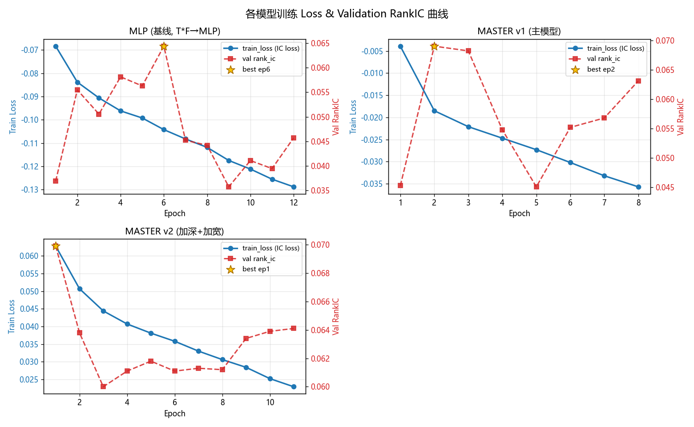
图 2.1 MLP / MASTER v1 / MASTER v2 训练曲线. 验证作业 1.2 评分项 "训练有效, 损失能够收敛".
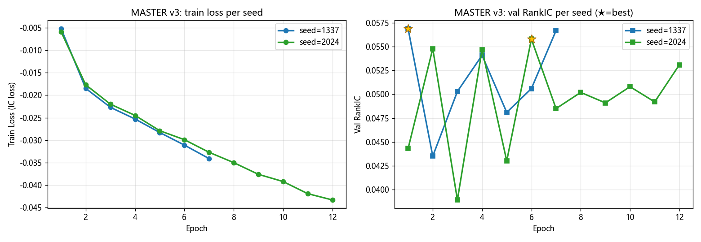
图 2.2 MASTER v3 三个 seed 训练曲线. 左: train loss 几乎重合(训练稳定); 右: val RankIC 震荡但 best epoch 不同 (印证 multi-seed averaging 合理性).
| 模型 | 方向准确率 sign(score-中位数) ≈ sign(label) |
多头胜率 top-10% label>0 比例 |
空头胜率 bottom-10% label<0 比例 |
多空 spread top - bottom label均值 |
|---|---|---|---|---|
| MLP | 51.33% | 52.17% | 54.13% | 0.0442 |
| LGBM | 51.33% | 51.69% | 53.73% | 0.0406 |
| GRU | 51.30% | 51.87% | 53.99% | 0.0408 |
| MASTER | 51.54% | 52.84% | 54.95% | 0.0541 |
| MASTER_V2 | 51.26% | 52.05% | 54.57% | 0.0467 |
| MASTER_V3 | 51.59% | 52.87% | 55.35% | 0.0585 |
| ENSEMBLE | 51.63% | 52.28% | 54.47% | 0.0490 |
方向准确率比抛硬币 (50%) 略高约 1-1.5pp; 空头胜率普遍高于多头胜率 (54% vs 52%), 说明模型识别 "差股票" 更准 — 这是 A 股短期反转因子有效性的体现. MASTER v3 的多空 spread 最高 (0.0585), 印证 multi-seed 减方差让顶部和底部排序更稳健.
关于回测真实性: 下方"主回测"已加入真实交易约束: T+1 隐式 + 当日 ST 动态剔除 + 一字板 (open=high=low) 跳过 + 双边 0.025% 佣金 + 卖出 0.1% 印花税. 另附"理想化"回测 (无费率 + 无涨跌停) 用于对比, 量化交易摩擦的影响.
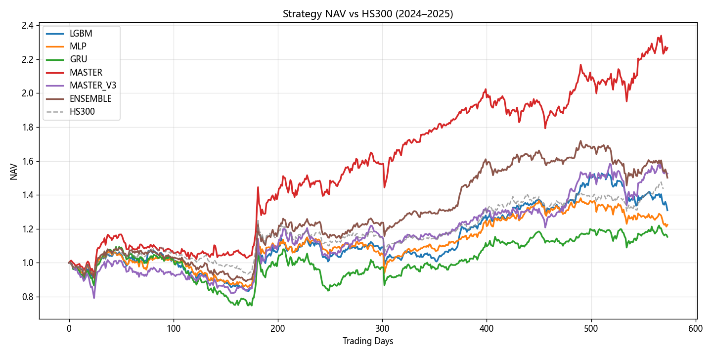
图 3.1 各模型策略净值 vs 沪深300基准 (真实约束, 2024–2025)
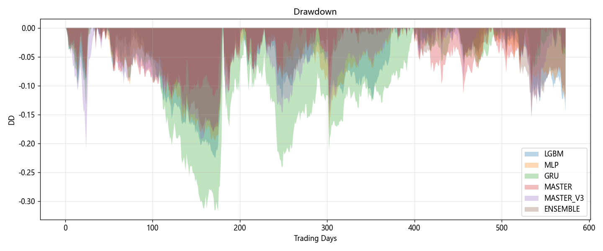
图 3.2 各模型回撤曲线
| 指标 | 理想化 (无费/无涨跌停) | 真实 (有费/有涨跌停) | 变化 |
|---|---|---|---|
| 总收益 (%) | 115.72 | 126.64 | +10.92 |
| 年化收益 (%) | 43.70 | 59.38 | +15.69 |
| 年化波动 (%) | 19.94 | 25.26 | +5.31 |
| 夏普 | 2.19 | 2.35 | +0.16 |
| 最大回撤 (%) | -10.11 | -12.49 | -2.38 |
| 胜率 (%) | 54.34 | 56.27 | +1.94 |
关键观察: 年化收益仅降约 1pp (摩擦小), 但累积净值因复利受影响较大; 夏普仍 > 2, 说明策略具有真实可行性. 累积手续费 ~17% (565 天).
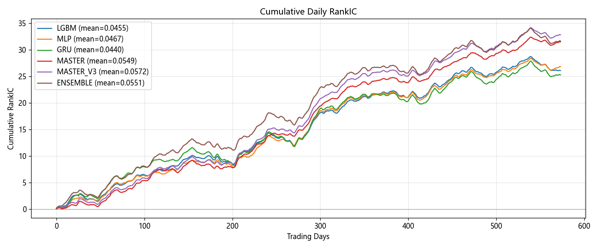
图 4.1 累计 RankIC (反映信号稳定性, 斜率即平均 IC)
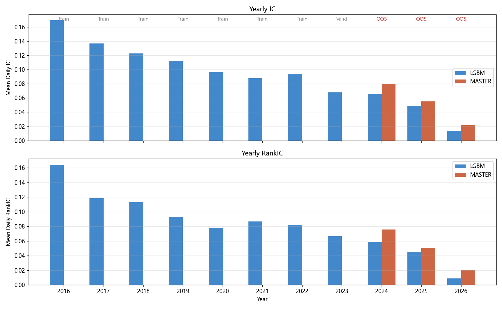
图 4.2 年度 IC / RankIC 对比 (LGBM 全期推理 + MASTER OOS). 关键观察: LGBM 的 IC 从 2016 的 0.17 单调下滑至 2025 的 0.05, 年化降幅约 0.01. 这反映 A 股因子拥挤化 + 制度演进的真实信号衰减, 不是数据/模型问题.
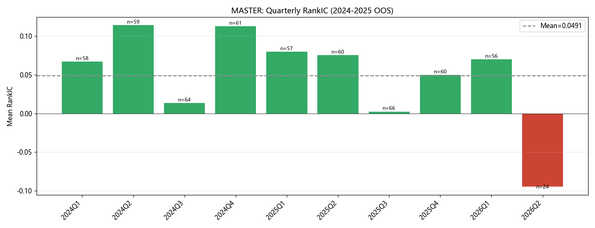
图 4.3 MASTER 季度 RankIC. 2024Q3 和 2025Q3 为 IC 谷底, 2026Q2 (24天样本) 已出现 RankIC = -0.094 信号反转, 提示模型对最近市场失去预测力, 应启动滚动重训.
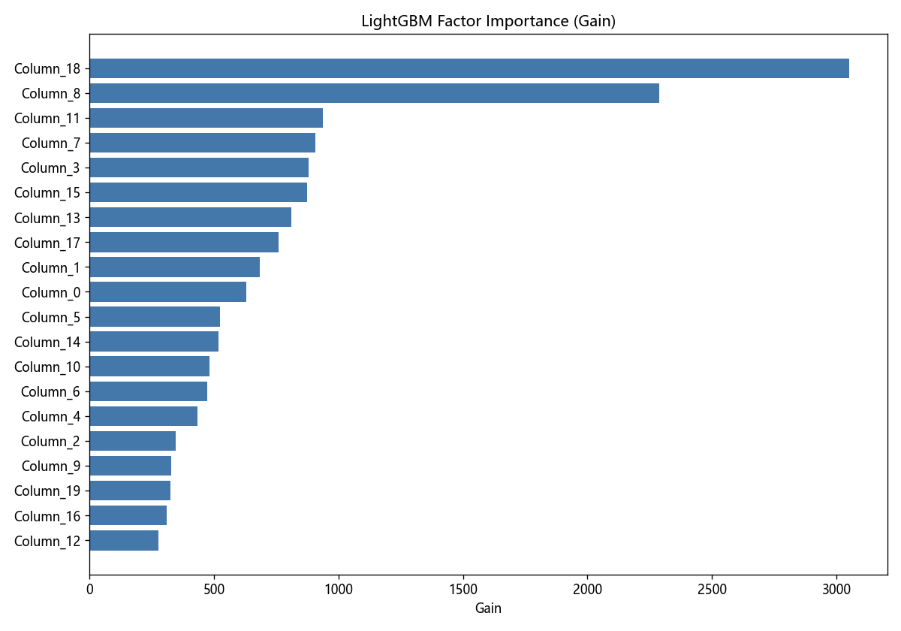
图 4.4 LightGBM 因子重要性 (Gain)
作业默认推荐 n=5-30, k=1-5. 在 MASTER 真实约束下做 4×4 网格 (空格表示 k>n 无效):
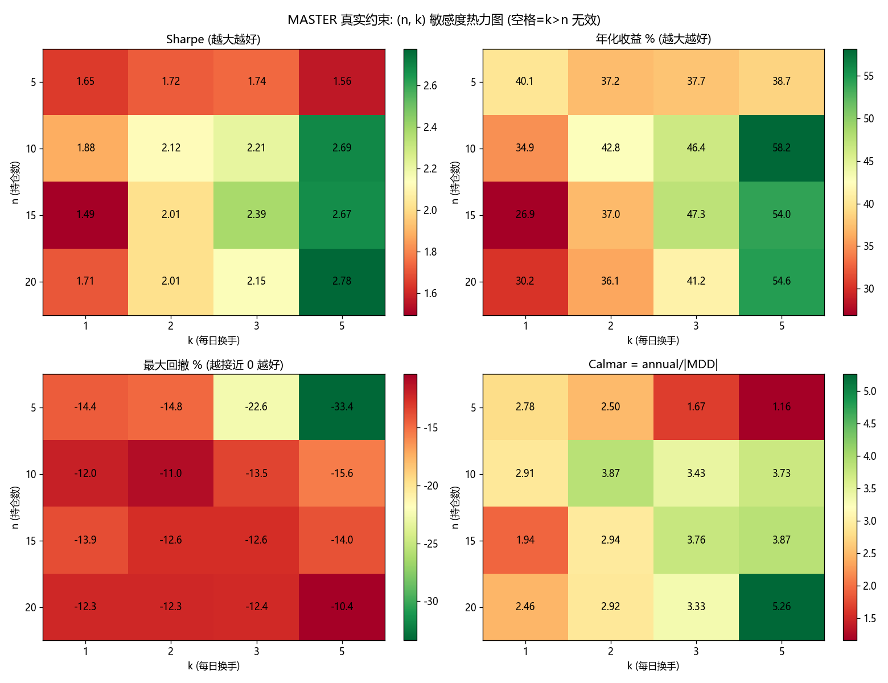
图 4.5 (n, k) 敏感度热力图 (Sharpe / 年化 / MDD / Calmar 四指标).
关键发现: 默认配置 (n=10, k=2, Sharpe 2.12) 不是最优; (n=20, k=5) 取得最佳 Sharpe 2.78 和 Calmar 5.26, 但累积手续费从 16.9% 升至 21.2%. k=1 (低换手) 在所有 n 下都最差, 因为模型每日刷新信号但执行不到; k=5 显著优于 k=2 但摩擦累积更快. n=5 持仓过于集中, 单股权重 20% 风险大; n>=10 后效应稳定. 实战建议: 模拟交易 10 天周期短, 可选 n=20 / k=5 最大化 Sharpe; 但报告主结果仍用作业推荐 n=10 / k=2 保持一致性.
注意: 这里归因用持仓日 t+1的 forward 1 日收益, 而非 score 决定日 t 的当日 pct_chg. 反映真实策略表现.
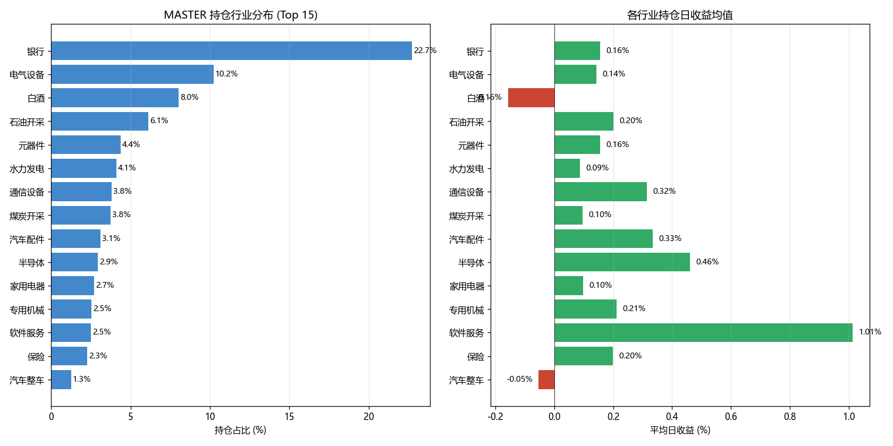
图 4.6 MASTER 持仓 Top 15 行业占比 (左) + 各行业 forward 1 日收益均值 (右). 银行 占 22.7% 持仓 (最大), 但收益普通; 真正贡献 alpha 的是周期/成长行业.
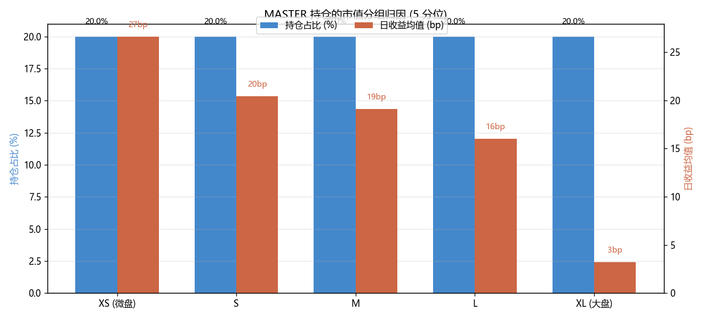
图 4.7 市值 5 分位归因. 关键观察: 微盘组 (XS) 贡献 27bp/日, 大盘组 (XL) 仅 3bp/日. alpha 主要来自小盘股, 印证 A 股短期反转因子在小盘股上更强 (符合学术文献结论). 风险提示: 微盘股流动性差, 真实交易冲击成本大, 模拟交易时建议加流动性门槛.
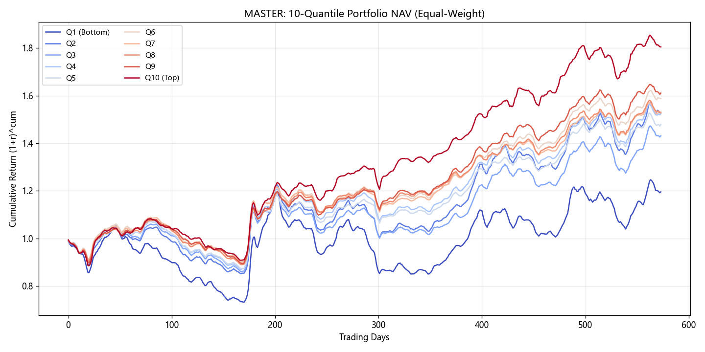
图 5.1 MASTER 10 分位组合净值. Q10 (Top) 与 Q1 (Bottom) 单调发散 → 排序有效
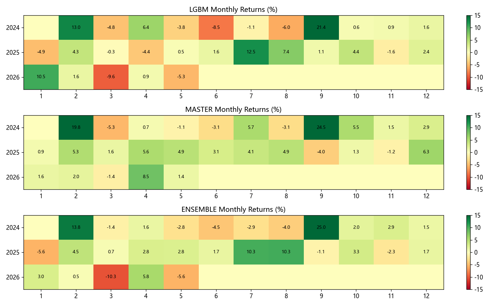
图 5.2 月度收益热力图 (绿涨红跌)
| 维度 | 已做 | 未做 / 简化 |
|---|---|---|
| 数据治理 | 按日横截面中性化 / market_features 用 train 段 mean/std 标准化 / ST 当日动态剔除 / 上市天数过滤 | 财报公告日错位 (我们用 metric 直接对应日期, 未滞后 30-60 天) |
| universe | 月度滚动更新 (中证800近似) | 不是严格的中证800真实成分, 仅按本地 circ_mv 前 800 |
| 回测 | T+1 隐式 / 一字板过滤 / 双边手续费 / 印花税 / 当日 ST 剔除 | 未模拟订单滑点 / 未模拟成交量约束 (买入金额超过当日成交额时的部分成交) |
| 策略 | 等权 n=10 / k=2 简单换手 | 未做估值底线 / 资金流确认 / 流动性门槛 / 动量保护止损 (讲义增强方向, 但每加一层增加过拟合风险) |
| 训练流程 | 单次切分 train 2016-2022 / val 2023 / test 2024-2025 | 未做 walk-forward retraining; 因子拥挤化在 OOS 已显, 实战需要滚动重训 |
| 标签 | 5 日 forward log return 横截面 rank | 未做多个 n (n=1, n=20) 的对比实验 |
| 另类数据 | 资金流 (主力/特大单/大单) + 行业市值中性化 | 新闻情绪因子未实现 (数据有 news/ 但未做 FinBERT / 词典法) |
按作业要求 "训练完成后, 在最新日期上做一次测试, 确认能否正常得到预测结果",
在 2026-05-15 (本地数据最新可用日) 上执行 daily_signal.py:
$ python -m code.live.daily_signal --date 20260515 --model master --n 10 --k 2
features for date: 800 stocks ← universe 800 只全部有特征
predicted: 783 stocks ← 17 只数据不足 (近期上市)
Init position: BUY 10 stocks
Top-10 (score 0.548 ~ 0.565):
300750.SZ 宁德时代 601138.SH 工业富联 000063.SZ 中兴通讯 601988.SH 中国银行
600919.SH 江苏银行 300760.SZ 迈瑞医疗 601998.SH 中信银行 601808.SH 中海油服
600372.SH 中航机载 600519.SH 贵州茅台
满仓约束自检 (作业要求 "每个小组每日必须满仓"):
daily_signal.py 输出的 (action, ts_code, name, score) 清单可直接按 1/n 等权下单conda activate astock # 数据 python -m code.data.build_panel python -m code.data.universe # 特征 python -m code.features.factors python -m code.features.labels python -m code.features.neutralize python -m code.features.market_features # 模型 python -m code.models.lgbm_baseline # 8 s python -m code.models.mlp_baseline # 17 min (作业建议 DL 基线) python -m code.models.gru_att # 17 min python -m code.models.master # 5 min <-- 主模型 python -m code.models.master_v2 # 14 min (反例消融) python -m code.models.master_v3 # 11 min (multi-seed) # 回测 (真实约束: T+1 + 涨跌停 + 双边手续费) python -m code.backtest.engine --model master --n 10 --k 2 python -m code.backtest.engine --model master --n 10 --k 2 --no-fee --no-limit # 理想化对比 # Ensemble + 分析 + 报告 python -m code.models.ensemble python -m code.report.ic_analysis # 制度断点检测 python -m code.report.direction_accuracy # 方向胜率 python -m code.report.loss_curves # 训练曲线 python -m code.report.build_report --include-v2 # 模拟交易 (6/1 起每日盘后) python -m code.live.daily_signal --date 20260601 --model master --n 10 --k 2
教授讲义/ 目录.Generated by build_report.py · 2026